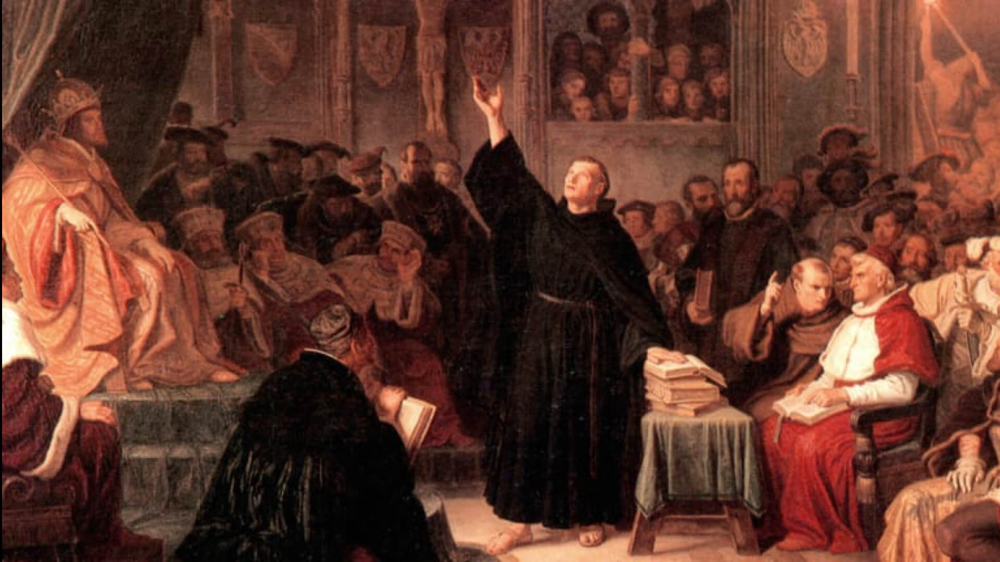

Luther called the Papacy the antichrist power because of their heretical teachings and misrepresentation of Jesus Christ and the Bible.
Soli Deo Gloria • 7 min read
To live out Soli Deo Gloria we need to be living sacrifices, always looking to Christ to sustain us, always denying self, always picking up our cross daily. They that live in the flesh and not by the Spirit cannot please nor glorify God, Romans 8:8